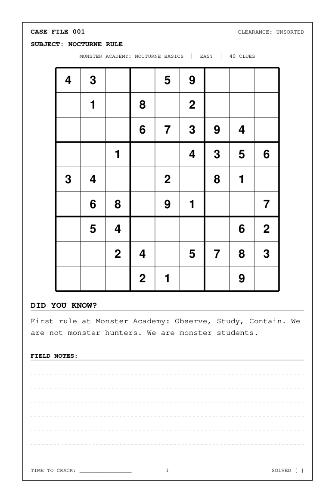
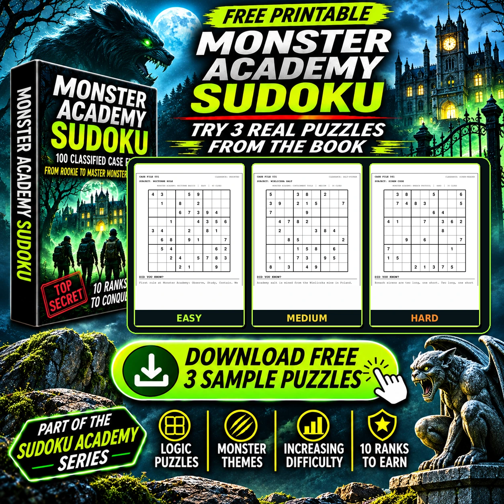
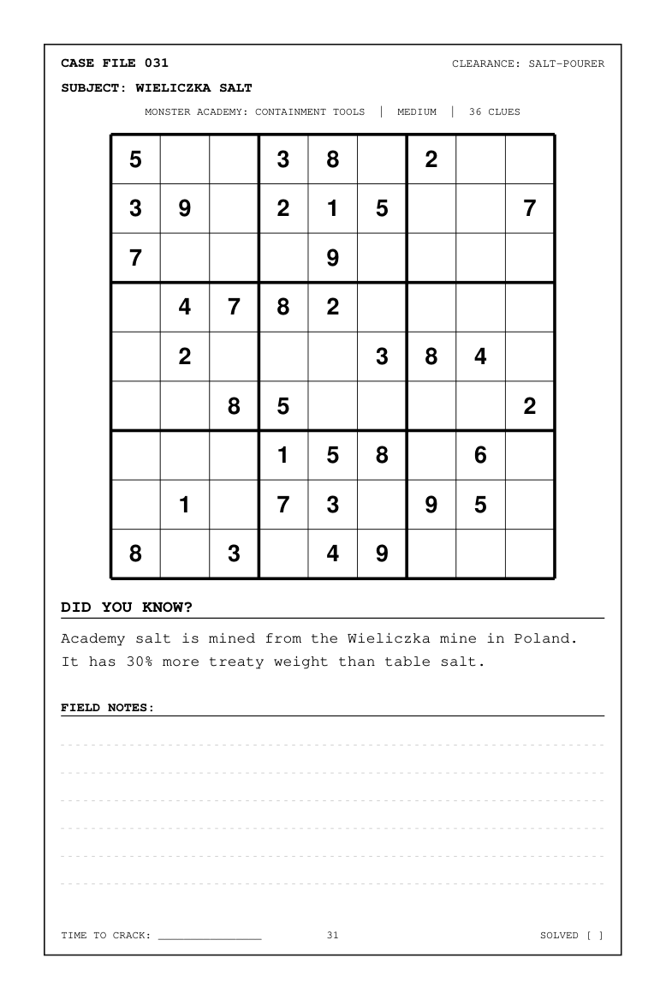
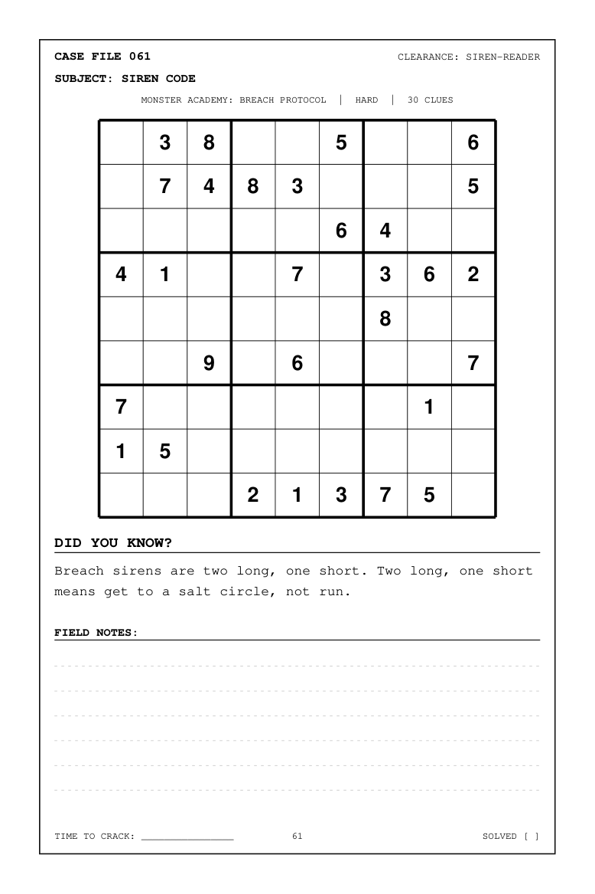

Easy · Puzzle 001

Free printable sample pack
Observe. Study. Contain. Download three genuine puzzle pages from the book.
↓ Download 3 free puzzles (PDF)Three original pages · Easy, Medium & Hard · No sign-up required

Preview the actual pages
These previews are rendered directly from the three-page PDF. Your download contains the same grids, facts and page layouts.



Enjoyed the free puzzles? Continue with all 100 in the paperback.
Buy the full paperback on Amazon UK ↗Amazon UK · Opens in a new tab
Part of the Sudoku Academy Series · Discover the other titles on our series homepage.